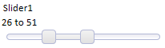
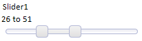
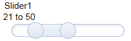
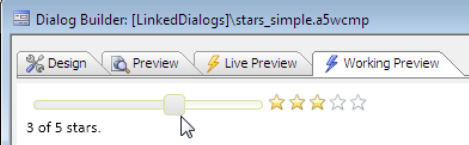

Slider Control in a Dialog Component
Requires the Dialog Component - Slider Control feature pack, included in subscription 
A slider control is a graphical way of displaying and entering one or two numeric values. Our slider control is touch-sensitive on mobile devices and PC touch screens, and typically takes less screen real estate than a scroll bar.
Embedding a Slider into the Dialog
How to define a simple slider control and a slider message: Watch Video - Part 1How to use advanced slider control features such as fading messages, two-value sliders, and automation using getValue() and setValue(): Watch Video - Part 2
Rendering the Slider in a larger format on a mobile device.
It's all a matter of style: Watch Video
Download the Components used in the videos above
Using the Slider to set a 'Rating' Image Showing Number of Stars
A common metaphor in Web applications is to indicate a 'rating' by showing an image with stars.
This video shows how the slider control can be used to set the rating and show the appropriate 'stars' image.
Watch Video
These videos show how the Dialog components were set up.
Watch Video - Part 1
Watch Video - Part 2
Download the Components Used in the Videos above